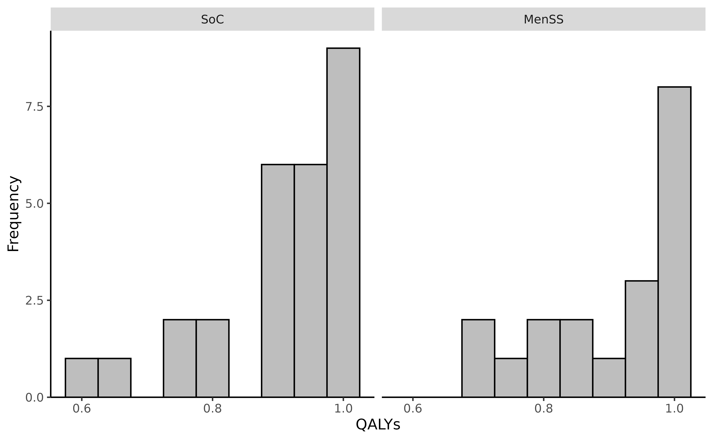
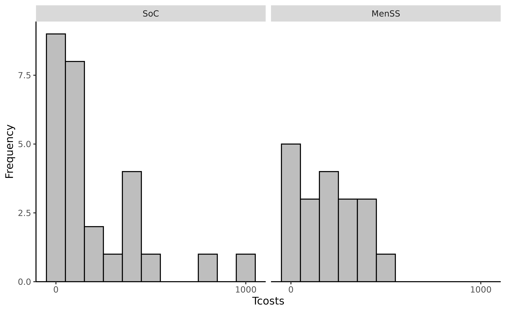
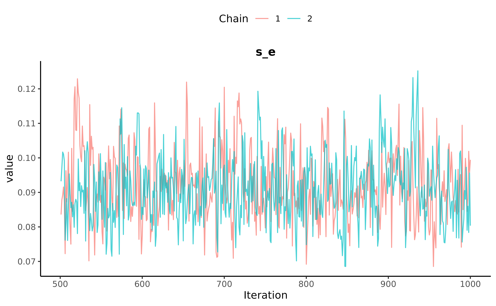
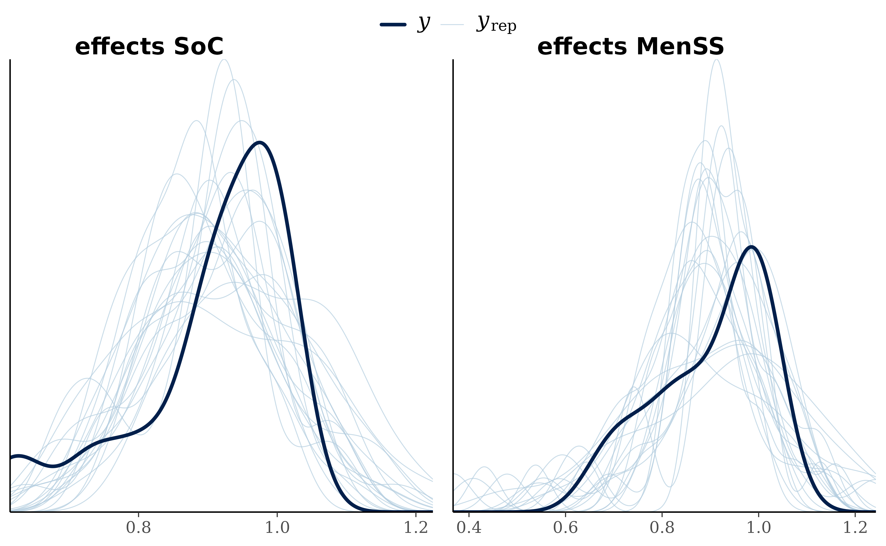
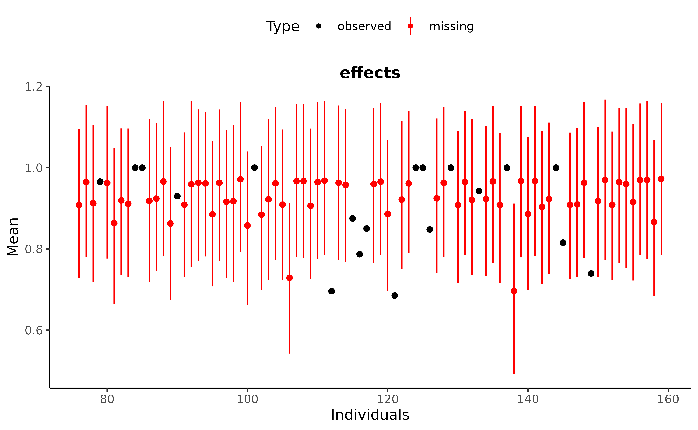
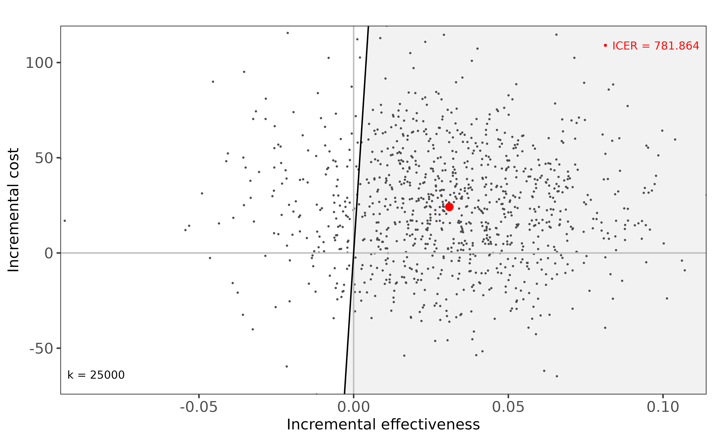
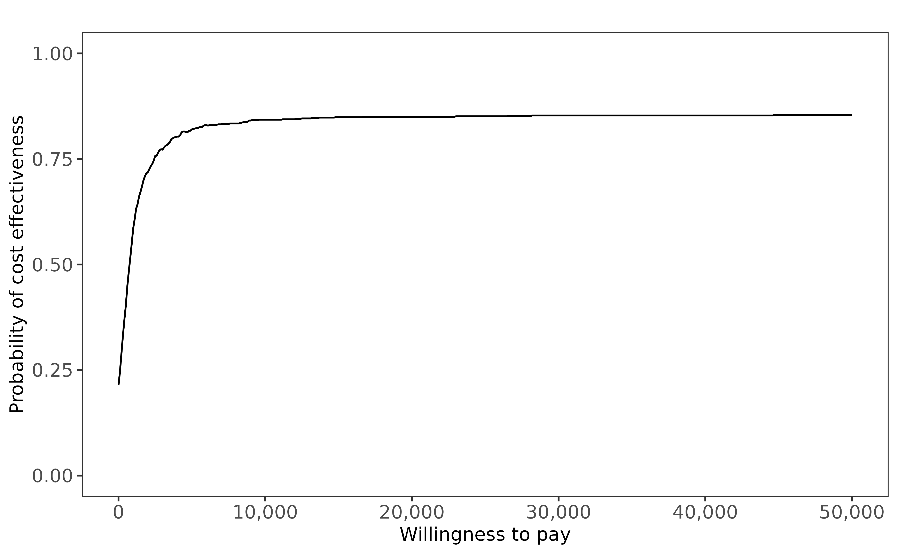

Introduction to missingHE
Source:vignettes/Introduction_to_missingHE.Rmd
Introduction_to_missingHE.RmdThe package missingHE is specifically designed to
facilitate the implementation of different types of missing data models
for trial-based health economic evaluations under a
Bayesian statistical framework. Justification for the
use of Bayesian inference in economic evaluations is related to the
decision-making nature of the research question, which requires to
assess the impact of different sources of uncertainty both on the
statistical and cost-effectiveness conclusions.
Although frequentist methods are popular among practitioners, they require some ad-hoc steps for properly quantifying the uncertainty around the decision problem based on key cost-effectiveness estimates. Examples include the use of some form of bootstrapping approach to generate standard cost-effectiveness outputs (e.g., cost-effectiveness planes and acceptability curves), or a multiple imputation approach for handling missingness uncertainty. Even though these steps can lead to statistically valid results, in practice, when the complexity of the model is increased (for example to deal with common statistical issues such as correlation, clustering or skewenss), the task of correctly quantifying uncertainty around estimates of interest may become incredibly challenging. The Bayesian approach, through standard Markov Chain Monte Carlo (MCMC) algorithms, can overcome these issues and fit more flexible models of increasing complexity in a relatively simple way. In addition, posterior distributions for any model quantities can be obtained while simultaneously handling multiple types of data idiosyncrasies (including missing data), and correctly propagating and quantifying the uncertainty on each unobserved quantity in the model.
Different types of missing data approaches exist in the literature,
each with its own advantages and disadvantages according to the specific
assumption made about the missing values. missingHE
implements three types of missingness models:
selection, pattern mixture, and
hurdle models. All models are implemented using the
BUGS language via the freely-available Bayesian program
JAGS. For technical details and an overview of the software
see https://mcmc-jags.sourceforge.io/. For each model, the
package provides a series of ancillary functions for assessing
convergence of the MCMC algorithm, checking the fit to the observed
data, extracting and summarising posterior estimates about model
parameters and cost-effectiveness results. This brief tutorial aims at
helping getting started with the package and its main functions.
Throughout the document, the built-in dataset called MenSS
is used as a toy example, which is directly available when loading
missingHE in the user’s R workspace. Note that
missingHE is designed to handle missing values only in the
effectiveness and cost outcome variables and that no missing values in
the covariates are allowed.
If you would like to have more information on the package, or would like to point out potential issues in the current version, feel free to contact the maintainer at a.gabrio@maastrichtuniversity.nl. Suggestions on how to improve the package are also very welcome. A development version of the package is also available from the author’s main GitHub repository at https://github.com/AnGabrio/missingHE.
Modelling Framework
The modelling approach in missingHE can be customised by
the user according to three key aspects: 1) parameterisation structure
of the model; 2) missingness approach; 3) format of the dataset. In this
introductory document, key elements of the modelling framework and the
available parameterisation structures are provided. To ease
presentation, these concepts are here only introduced with respect to
the analysis of a cross-sectional dataset, which has historically
represented the default analysis setting in the health economics
literature. More advanced models and customisation options available in
missingHE are discussed in separate vignettes, including non-ignorable models, model customisation
options, and longitudinal data
analysis.
Trial-based health economic data usually consist in the cross-sectional cost-effectiveness pair of variables , collected on the -th patient assigned to the -th treatment in the study, for patients and treatment options. In many jurisdictions, the recommended effectiveness variable is a Quality Adjusted Life Years (QALYs) measure, which is typically obtained by aggregating utility scores computed from the patients’ answers to generic health-related quality of life questionnaires (e.g., EQ-5D) collected at given time intervals. The cost variable denotes the sum of all relevant patient-level costs (e.g., direct/indirect medical costs, productivity losses, etc.), which are often collected from the patients’ answers to different types of healthcare-resource utilisation questionnaires or medical records.
In missingHE, the observed variables
are modelled using a joint bivariate probability distribution with
density
,
as a function of a vector of relevant parameters
,
and implemented using the following conditional factorisation
where denotes the marginal effectiveness distribution and the conditional cost distribution given , with and being the treatment-specific set of parameters indexing the marginal effectiveness and conditional cost distributions, respectively. To simplify notation, we now drop the treatment index .
Both outcome densities in Equation @ref(eq:bivmodel) are specified using some parametric forms for the probability distributions to describe the underlying uncertainty in the cost-effectiveness data. The set of model parameters can be generally represented as , where: denotes the set of location parameters (e.g., mean) and the set of ancillary parameters (e.g., variance) indexing the outcome distributions, both depending on some vector of potential baseline covariates (e.g., age, sex, etc…). While it is possible for both and to explicitly depend on , the model specification is usually simplified assuming that these only affect the location parameters through a generalised linear formulation. For example, the location parameter of the effectiveness model can be specified as:
and the location parameter of the cost model as:
where the regression coefficient
is included to capture the possible dependence between
and
at the location level. Covariates may be included into the model at
different scales using the link functions
and
,
being either identity, logarithmic or logit, depending on the type of
outcome and distribution specified. Note that missingHE
expands any categorical covariates to a set of dummy variables. In
addition, Equation @ref(eq:glme) and Equation @ref(eq:glmc) can be
extended, as indicated by
,
to include additional terms into the model, e.g., clustering effects to
account for the possible multilevel structure of the data. The objective
of the statistical analysis is the estimation of population average
effectiveness and cost parameters
in each treatment group as well as to quantify the (posterior)
uncertainty around them. Estimates of these parameters can be obtained
from Equation @ref(eq:glme) and Equation @ref(eq:glmc) either from their
respective regression parameters after mean centring all covariates or
through repeatedly sampling from the predictive distribution of the
outcomes using Monte Carlo integration.
Assuming that the location parameters are modelled using a linear
predictor form as in Equation @ref(eq:glme) and Equation @ref(eq:glmc),
priors on the corresponding sets of regression coefficients can be
specified as
and
,
where the notation
and
denotes the prior mean and standard deviation, respectively. By default,
missingHE assumes “minimally informative” prior values of
and
for all regression coefficients. When genuine prior knowledge on
specific parameters is available, it is possible to modify the default
priors and elicit the corresponding information into the model. As for
the ancillary parameters, the choice of the prior values depends on the
form of the probability distribution selected according to the modelling
choices available in missingHE.
Missingness Approach
missingHE focusses exclusively on handling missingness
in cost and effectiveness measures
()
assuming the set of baseline variables
to be fully-observed for all individuals. When analysing incomplete
outcome data, it is essential to investigate the reasons behind the
missingness process, often referred to as the missing data
mechanism. Since this is typically not under the control of the
investigators, unverifiable assumptions have to be made, and the
validity of the analysis depends on whether the assumptions formulated
hold for the data at hand. Formally, given a certain outcome variable
,
its missing data mechanism can be defined as a probability model for the
distribution of the missingness indicators
,
denoting whether the corresponding value is observed
or missing
,
conditional on
,
,
and
.
Depending on the assumed relationship between
,
,
(and
),
Rubin’s taxonomy distinguishes between three broad types of mechanisms:
missing completely at random (MCAR); missing at random
(MAR); missing not at random (MNAR).
Under a MCAR mechanism:
where denotes the set of parameters indexing the missingness model. A key consequence of MCAR is that any method yielding valid inferences in the absence of missing values will also be valid when focussing on the observed data alone, including the set of individuals with fully-observed data (“complete cases”).
Under a MAR mechanism:
A key consequence of MAR is that missing values can be validly “predicted” using the observed data and a correct model for . Both MCAR and MAR often fall in the general class of ignorable mechanisms in that, once it is established that does not depend on , it is possible to obtain valid inferences given a correctly specification for .
Finally, under a MNAR mechanism:
A MNAR mechanism is often referred to as non-ignorable or informative because the model assumed for must be specified and its choice will drive the results of the analysis. Thus, without relying on external information, identification of the model is driven by unverifiable assumptions and conducting sensitivity analysis to assess the robustness of the results to a range of plausible missingness assumptions becomes imperative.
Under MNAR, almost all standard analysis methods are invalid, and a
“principled” approach to missingness is instead required to obtain valid
inferences. We specifically refer to principled methods for missing
data, also referred to as joint models, as those based on a
well-defined statistical model for the complete (i.e., observed and
missing) data and explicit assumptions about the missing data mechanism.
Alternative approaches have also been developed that do not require the
specification of a joint model, but instead identify the model through
specific assumptions about the missing values. missingHE
implements three methods to handle non-ignorable missingness in the
context of trial-based cost-effectiveness analysis: two joint modelling
approaches, namely selection and pattern mixture
models, and one approach which relies on a combination of assumptions
about the distribution of the outcome and informative assumptions about
the missing values, the hurdle model. A summary presentation of
these approaches is now provided.
Selection Models
The joint distribution of an outcome () and its missingness () is specified in terms of a complete data model for the outcome and an explicit model for the probability of missingness conditional on the possibly unobserved data:
where
and
denote the two (distinct) sets of parameters indexing the outcome and
missingness model, respectively. While for
the model specification varies depending on the type of outcome and
distributional assumptions (see Section @ref(sec-frame)), for
missingHE uses a common structure which models the
missingness probability
as function of other quantities through a logistic regression:
where , and denote the intercept, the set of covariates-specific coefficients, and the coefficient capturing the impact of the unobserved values (in ) on the missingness probability, respectively. Additional terms, e.g., clustering effects, may also be included in Equation @ref(eq:misp) as indicated by . Due to the missing values in , the model can only be identified by imposing some restrictions. These are implicitly defined from a combination of parametric assumptions about and dependence structure assumed for . As a result, sensitivity analysis to assess the impact of alternative missingness assumptions on the inferences can be done by: varying the distributional assumption of ; varying the modelling structure in Equation @ref(eq:misp); and, within a Bayesian setting, varying the prior distribution on .
Pattern Mixture Models
The joint distribution of outcome and missingness is specified in terms of a conditional model for the outcome given the missingness indicators and a marginal model for the probability of missingness:
where
and
denote the (distinct) sets of parameters indexing the conditional model
for the outcome and the marginal model of missingness, respectively. In
contrast to Section @ref(sec-sm), the marginal model for
corresponds to a model for the different missingness patterns
to which individuals can be assigned (according to the values of the
indicators
).
Following standard practice, to ease specification of
,
missingHE directly models the missingness pattern indicator
using a Multinomial distribution
with
being the set of probabilities for each possible pattern, which is
modelled through a joint prior
,
where
denotes the set of prior concentration parameters. By default,
missingHE assumes a minimally informative prior on these
parameters by setting
to assign the same weight to each pattern probability.
Note that, the conditional distribution of the outcomes is not always
identifiable because, for all but the complete cases, some values are
missing. To overcome this problem, some type of identifying
restrictions are imposed on the model to ensure that all
pattern-specific outcome distributions can be identified. Typically,
these restrictions are constructed using information from other
identifiable patterns, and therefore imply some form of ignorability of
the missingness mechanism. Different types of identifying restrictions
exist and missingHE provides the user with two choices:
complete case (CC) and available case (AC)
restrictions. For example, under the CC restrictions,
missingHE identifies the parameters of any unidentified
outcome distributions in Equation @ref(eq:pmm) using the corresponding
estimates from the complete case pattern.
Exploration of non-ignorable assumptions is achieved by including
sensitivity parameters
within the type of restrictions used to identify the model under
ignorability. missingHE assesses MNAR using location-shift
parameters
within the imposed restrictions on pattern-specific means
that are not identifiable from the data. For example, using the CC
restrictions, missingHE identifies the marginal mean of a
given outcome
(
or
)
in the fully-missing pattern as:
where and denote the marginal mean in the fully-missing and complete case pattern, respectively. Sensitivity analysis can then be conducted by: varying the type of identifying restrictions imposed; varying the prior distribution on .
Hurdle Models
Although hurdle models do not explicitly specify the joint distribution , and therefore cannot be classified as principled missingness methods, they can be tailored to assess the impact of alternative non-ignorable missingness assumptions. A key advantage of hurdle models in trial-based economic evaluations is their ability to explicitly handle the occurrence of many identical values in the outcomes, also referred to as “structural values” (e.g., zero costs or perfect health state), which often make model implementation quite problematic.
For a given outcome variable
(i.e.
or
),
missingHE implements a hurdle model to handle a given
structural value
by creating a corresponding indicator variable
,
taking value
when
and
otherwise. The probability of observing a structural value
is then estimated via logistic regression
as function of the intercept , the covariates-specific coefficients , and other (possibly) relevant terms (e.g., clustering effects). Estimates for the marginal probability of being associated with a structural value are retrieved by either applying the inverse logit function to Equation @ref(eq:strp) after mean-centring all covariates or by repeatedly sampling from the posterior predictive distribution of the outcomes through Monte Carlo Integration. Finally, estimates for the marginal mean of are obtained from the linear combination
where
and
denote the marginal probability of not being associated with the
structural value
and the marginal mean for the non-structural component of the outcome,
respectively. missingHE retrieves estimates of
using the same modelling framework and distributions as in Section
@ref(sec-frame), but applied to
for only the non-structural cases, i.e., all individuals for whom
.
Making a parallel with the missing data literature, depending on whether
no or some covariates are included in Equation @ref(eq:strp), the
underlying mechanism has been named structural completely at
random (SCAR) or structural at random (SAR). However, a
key difference with respect to MCAR or MAR is that failure to correctly
specify Equation @ref(eq:strp) will always lead to invalid inferences
since estimates of
are needed in Equation @ref(eq:muweight).
When some outcome data are missing, values of are unknown for at least some individuals and, under MAR, valid inferences can be obtained provided a correct specification of Equation @ref(eq:strp) as well as of the model fitted to the non-structural values. In addition, hurdle models allow to explore the robustness of the results to specific non-ignorable assumptions, therefore allowing to perform a simple type of sensitivity analysis. This is achieved by arbitrarily set to assign the individuals with missing outcome values to either the structural () or non-structural () component of the mixture, and exploring alternative configurations in terms of the proportions of these values (e.g., between treatment groups).
The MenSS trial
In the following, we use data from a real clinical study as a running
example to familiarise the user with key features of
missingHE. The MenSS trial was a pilot randomised trial
whose participants were young men at risk of sexually trasmitted
infections (STIs) attending sexual health clinics in England. The trial
aimed at evaluating the feasibility of extending the design to a
full-scale trial and to provide a preliminary assessment of the
cost-effectiveness of two alternative interventions: standard of
care (SoC) versus the Men’s Safer Sex website (MenSS),
consisting in a web-based interactive intervention aimed at giving
advice about sexual health and STIs.
After loading the package missingHE, for example by
typing library(missingHE), the MenSS dataset
(MenSS) is directly imported into the R
workspace and can be inspected using the command
> rbind(head(MenSS), tail(MenSS))to show the first and last few rows:
#> id u.0 e c age ethnicity employment sex_inst.0 sex_inst sti.0 sti site trt
#> 1 0.725 NA NA 23 0 0 25 NA 0 1 1 SoC
#> 2 0.848 0.924 0 23 0 1 30 50 0 0 3 SoC
#> 3 0.848 NA NA 27 1 0 6 3 0 0 3 SoC
#> 4 1.000 NA NA 27 0 0 20 0 0 0 1 SoC
#> 5 0.796 NA NA 18 0 0 1 99 0 0 3 SoC
#> 6 1.000 0.943 0 25 1 1 20 NA 1 0 1 SoC
#> 154 1.000 NA NA 27 1 1 2 10 0 0 2 MenSS
#> 155 0.882 NA NA 18 1 1 3 NA 0 0 3 MenSS
#> 156 1.000 NA NA 21 1 1 12 40 0 0 3 MenSS
#> 157 1.000 NA NA 21 0 0 8 0 0 0 3 MenSS
#> 158 0.725 NA NA 28 1 1 0 NA 0 0 3 MenSS
#> 159 1.000 NA NA 38 0 0 6 NA 0 0 3 MenSSThe dataset consists of
individuals grouped in two arms, where trt
indicates the SoC and trt
indicates the MenSS intervention, with id denoting the
participant identification number.
Key health economic variables are u.0, e
and c, which denote the baseline utility score, QALY and
Total cost outcomes, respectively. All baseline variables are
fully-observed, whereas all outcome variables are partially-observed in
both treatment arms. A total of 46
(29)
individuals has observed QALYs and Total costs, of which 0 in the SoC
and 0 in the MenSS arm, while the remaining 113 individuals have both
e and c missing. Figure @ref(fig:fig1e) and
Figure @ref(fig:fig1c) show histograms of the observed distributions for
the QALY and Total cost variables in MenSS, separately by
treatment arm. We note that, among the observed cases, 17
(37)
individuals are associated with structural values of perfect health
(),
while 12
(26)
individuals have structural values of no service use
().

Histograms of the observed data distributions for the QALYs in the SoC and MenSS arm.

Histograms of the observed data distributions for the Total costs in the SoC and MenSS arm.
Model fitting
missingHE relies on JAGS through the
dedicated functions selection, pattern, and
hurdle to implement different missingness approaches while
providing a series of customisation options. Although some of these
options are specific to a given approach, many of the available
arguments are shared across the three functions to ensure consistency
and uniformity when implementing the framework in Section
@ref(sec-frame). In particular, key options include: choice of the
probability distribution for the effectiveness and cost variables,
choice of the regression model for each outcome, and type of missingness
mechanism assumed.
A set of pre-defined choices in terms of probability distributions,
with built-in parameterisations, for the effectiveness (e)
and/or cost (c) variables are available. The user may
select a given distributional choice by passing the corresponding
missingHE name to the arguments dist_e and
dist_c of the desired function. The outcome model
requires a separate specification of the effectiveness and cost model
formula following Equation @ref(eq:bivmodel) using the notation:
model.eff <- e ~ trt + ...
model.cost <- c ~ trt + ...where e, c and trt indicate
the effectiveness, cost and treatment variable names stored in the
dataset, while ... is a suitable form for the combination
of covariates to be used in each model. Dependence between the two
models can be specified by adding the term e as an
additional covariate into the cost model. Note that the treatment
indicator trt must be included into both regression
formulae and should be coded as a factor variable in the dataset. The
type of missingness assumption for each outcome is specified through the
argument type, by setting type = "MAR" or
type = "MNAR" to select between a MAR or MNAR mechanism,
respectively.
To provide a concise overview of key generic options in
missingHE, let us denote with fit.function the
name of one function among selection, pattern
or hurdle. Then, a suitable call to
fit.function is the following.
fit.model <- fit.function(data = data, model.eff = model.eff,
model.cost = model.cost, dist_e = dist_e, dist_c = dist_c, type = type, ...)where data is a dataframe containing the data,
model.eff and model.cost are the formulae for
the effectiveness and cost regression models, dist_e,
dist_c and type are character values
indicating the chosen outcome distributions and type of missingness
mechanism, while ... indicates additional optional
arguments. In practice, unless there is a clear understanding of the
implications of any change to the default model structure, the user is
not required to modify the default values of these optional arguments.
The only exception is related to: number of MCMC chains
(n.chains), number of iterations (n.iter) and
values of the prior distribution parameters (prior). As an
example, consider the default priors for the linear predictor
coefficients in the effectiveness and cost model, namely
and
.
Suppose the user wants to select different prior mean and standard
deviation values for these parameters. This can be done by typing
which instructs missingHE to separately assign normal
distributions to each regression coefficient in the models with prior
mean of
and precision (inverse of variance) of
.
The list myprior can then be passed to the optional
prior argument in the function to implement the model using
the updated priors.
fit.model <- fit.function(data = data, model.eff = model.eff,
model.cost = model.cost, dist_e = dist_e, dist_c = dist_c,
type = type, prior = myprior)Note that the list and its elements containing the custom prior
specification need to be named using the missingHE accepted
terminology for parameter and distribution names. If the option
save_model is set to TRUE, the
JAGS model template is saved in the current working
directory and can be used to further modify the model structure. This,
however, will require a new compilation of the model and, at present,
the new model has to be run using dedicated commands, such as
rjags from the R2jags package.
Fitting models under MAR
We consider the following common model specification for
:
e and c are both normally distributed;
u.0 is included as a covariate in the effectiveness model;
a MAR mechanism is assumed for both outcomes. The model is first
implemented using a selection approach through the function
selection under a MAR assumption for e
(conditional on u.0) and c using the following
command.
The arguments model.me and model.mc are
specific to selection and denote the missingness mechanism
as in Equation @ref(eq:misp) for both outcomes. Since u.0
is included in model.me and there are no covariates in
model.mc, the QALY and Total cost mechanisms are assumed
MAR (type = "MAR") conditional on the observed baseline
utility and outcome values. The argument ref = 2 is used to
specify which study arm should be used as the reference group in the
comparison, i.e., incremental results are reported here as
trt = 2 ("MenSS") vs trt = 1
("SoC").
Next, we specify the same outcome model under a pattern mixture
approach, but assuming a logistic distribution for e. The
model is implemented through the function pattern, imposing
CC restrictions to identify the model under MAR, using the following
command.
The argument restriction is specific to
pattern and denotes the type of restrictions imposed to
identify the model. Since restriction = "CC" (default), the
parameters of the unidentified patterns are identified using only
corresponding estimates from the complete cases under a MAR assumption
(type = "MAR").
Finally, the model is specified under a hurdle approach but assuming
a Beta and Gamma distribution for e and c,
respectively. In particular, individuals with
and
are assigned to a structural component in the QALY and Total cost model,
respectively. The model is implemented through the function
hurdle, under a SCAR assumption about the structural value
mechanism, using the following command.
The arguments se, sc, model.se
and model.sc are specific to hurdle and denote
the effectiveness and cost structural values and their corresponding
mechanism specification as in Equation @ref(eq:strp). Since no
covariates are included in model.se and
model.sc, the probability of being associated with a
structural value in both outcomes is assumed to not depend on any other
variable (type = "SCAR"). The model is implicitly
identified under MAR since no informative assumption is made about the
unobserved outcome data.
Model assessment
Prior to inspecting the posterior results, it is important to assess
model performance and convergence of the MCMC algorithm.
missingHE provides three functions to compute different
types of popular Bayesian model assessment measures and plots:
diagnosticprovides a suit of diagnostic tools to visualise the posterior distribution and assess MCMC convergence for each parameter in the model.ppcprovides a suit of graphical representations of posterior replications generated from the model, also known as posterior predictive checks, to assess the model fit to the observed data.picprovides alternative predictive accuracy measures, also known as predictive information criteria, which are computed based on the log-likelihood evaluated at the posterior simulations of the model parameters.
Each of these functions accepts as main argument an R
object of class "missingHE" containing the output of a
Bayesian model generated using any of the three model fitting functions
from Section @ref(sec-marmodel).
Convergence diagnostics
The function diagnostic provides a range of standard
diagnostic plots for assessing convergence based on the posterior
distribution of model parameters. Consider the output of the selection
model fitted in Section @ref(sec-marmodel) and stored in the object
sm1_mar; we may use the command
> diagnostic(x = sm1_mar, type = "traceplot", param = "sd.e")to produce “traceplots” for the standard deviation effectiveness parameter estimates from the model. In this case, as displayed in Figure @ref(fig:fig2), no major issues in convergence are identified with the traceplots showing acceptable mixing in the two chains.
#> Loading required namespace: ggmcmc
Checking convergence using the diagnostic function for a model fitted in missingHE, for example through inspection of the traceplots.
With the exception of the argument x, which must be an
object of class "missingHE", all other arguments can be
used to customise the output of the function. A full description of the
choices for each argument, including the available types of diagnostics
and families of parameters, is provided in the help file of the package.
A quick description of the available options is the following.
type: the class of diagnostic plot, which must be named according to the options and terminology accepted bymissingHE. Examples include: density plots (default"denplot"), traceplots ("traceplot") and autocorrelation plots ("acf").param: family of parameters to be displayed, named according to the options and terminology accepted bymissingHE. Examples include: effectiveness location regression coefficients ("alpha") and marginal means ("mu.e") as well as their corresponding cost parameters ("beta") and ("mu.c"). Default value is"all", indicating all parameters stored in the object passed tox. Note that some family of parameters are only available for specific types of model structures and missingness assumptions.
Note that most of the output produced by diagnostic is
effectively a ggplot2 object, and can therefore be
manipulated by the user using functions from packages which allow to
customise such objects.
Posterior predictive checks
The function ppc provides a range of graphical posterior
predictive checks for assessing the fit of a model. Consider again the
output of the selection model stored in the sm1_mar; we may
use the command
> ppc(x = sm1_mar, type = "dens_overlay", outcome = "effects", ndisplay = 20)to plot the densities of ndisplay
replications of the effectiveness data (light blue lines) with respect
to the density of the observed data (dark blue line), separately in the
Soc (trt = 1) and MenSS (trt = 2) arm. In this
case, as displayed in Figure @ref(fig:fig3), some discrepancies between
the replicated and observed data densities occur. This suggests a
relatively poor fit of the current model (i.e., the normality assumption
of e) to the observed data in both arms.

Posterior predictive graphical checks using the ppc function for a model fitted in missingHE, for example through inspection of overlayed densities.
A full description of the choices for each argument in
ppc, including the available types of posterior predictive
checks, is provided in the package help file. A quick description of the
available options is the following.
type: class of posterior predictive check, named according to the available options and terminology accepted bymissingHE. Examples include: histograms (default"histogram"), overlayed densities ("dens_overlay") and boxplots ("boxplot").outcome: outcome variable, named according to the available options and terminology accepted bymissingHE. Available choices are: effectiveness ("effects"), costs ("costs") or both outcomes (default"both").ndisplay: number of model-based replications of the data to be displayed for each selected type of outcome and graph (default ).
Predictive information criteria
The function pic allows to assess the relative
predictive accuracy of models by computing three alternative Bayesian
information criteria: Deviance Information Criterion or
DIC; Widely Applicable Information Criterion
or WAIC; and Leave-One-Out Information
Criterion or LOOIC. As an example, consider again
the model results stored in sm1_mar; we may use the
command
> pic_sm1_mar <- pic(x = sm1_mar, criterion = "waic", cases = "cc")to return a named list containing a series of components used in the
calculation of the selected information criterion. In this case, WAIC
was selected as specified in criterion = "waic", and its
value may be inspected by typing:
> pic_sm1_mar$waic
#> [1] 787.741Note that all information criteria in missingHE can only
be used as relative measures of fit to compare models, with lower values
typically indicating better fit. A quick description of the main
arguments in pic is the following.
criterion: type of information criteria: DIC (default"dic"), WAIC ("waic") and LOOIC ("looic"). Alongside the value of the criterion, additional quantities used in its computation are also stored and may be returned.cases: the group of observed cases for which information criterion should be computed. Available choices include: complete cases ("cc"), available observed cases for only the effectiveness ("ac_e") or costs ("ac_c"), and all cases ("all").
A full description of the different types of output associated and input choices is provided in the package help file.
Results inspection
Executing any of the three model fitting functions in Section
@ref(sec-marmodel) creates an R object of class
"missingHE", in which results are stored for inspection.
For instance, consider the object sm1_mar, which is a list
containing the results of a selection model fitted under MAR for both
outcomes. The R command
> names(sm1_mar)displays the names of the different elements in the list.
#> [1] "data_set" "model_output" "mod_est" "cea" "type" "data_format" "call"The objects data_set, model_output and
cea are themselves lists, whereas type and
data_format are strings. These elements contain the
following output:
data_set: a list storing the raw data and information about the model, such as the effectiveness and cost variables, the total number of individuals, the number of observed and missing outcome values, and the covariate data (if included in the model).model_output: a list storing posterior samples for key parameters of interest (e.g., mean effectiveness and costs), imputed outcome values, and information about model structure (e.g., distributions and missingness assumption).cea: a list storing standardised health economics measures, computed based on posterior parameter estimates through the functionbceafrom the packageBCEA. These results can also be further analysed using tailored functions fromBCEAto obtain standard cost-effectiveness output (see Section @ref(sec-psaBCEA)).type: a string describing the missingness assumption used to fit the model, i.e., either"MAR"or"MNAR".data_format: a string describing the type of data format used to fit the model, i.e., either"wide"(cross-sectional) or"long"(longitudinal).
Summary statistical output from JAGS can be accessed
through the standard R notation
sm1_mar$model_output[[2]] by position (i.e., using “double
square brackets”) or alternatively by using the name model
and $, and can be inspected by typing
> names(sm1_mar$model_output$`model`)which produces
#> [1] "model" "BUGSoutput" "parameters.to.save" "model.file"
#> [5] "n.iter" "DIC"The quantities included in the model list are those
stored in the standard JAGS output obtained from
R2jags. Users who are familiar with JAGS and
R programming may access this output to post-process and
further customise the model results.
Summarise parameter estimates
Key quantities of interest are the posterior estimates of the mean
effectiveness and cost parameters in each treatment arm
.
Summary statistics computed based on posterior samples of these
parameters may be accessed using the postsum function by
typing
> postsum(sm1_mar)which returns the following output
#> mean sd 2.5% 50% 97.5% Rhat n.eff
#> alpha[1] 0.561755 0.05827044 0.4457129 0.5636849 0.6833789 1.00 1000
#> alpha[2] 0.029739 0.02904871 -0.0300774 0.0292221 0.0882047 1.00 400
#> alpha[3] 0.373024 0.06115481 0.2503782 0.3721239 0.4922676 1.00 1000
#> beta[1] 80.499940 26.73368067 27.2276911 80.7697199 133.1719958 1.02 85
#> beta[2] 24.342186 28.79296703 -30.2614876 24.8370067 81.2571853 1.00 1000
#> beta_f -7.201341 31.36653514 -68.6769804 -5.9307583 49.4538246 1.00 1000
#> gamma_c 0.899245 0.17378540 0.5697458 0.8887602 1.2375554 1.00 1000
#> gamma_e[1] 0.430566 0.89341470 -1.4193590 0.3984144 2.2176378 1.05 37
#> gamma_e[2] 0.532659 0.99918537 -1.4286479 0.5780512 2.4949173 1.05 37
#> p_c 0.709500 0.03562866 0.6387045 0.7086342 0.7751382 1.00 1000
#> p_e 0.709728 0.03569295 0.6348714 0.7117597 0.7754833 1.00 1000
#> s_c 247.118588 27.24982537 198.8917987 244.3956698 303.7159599 1.04 48
#> s_e 0.091693 0.01008972 0.0741280 0.0908472 0.1141444 1.00 370
#> tau_c 0.000017 0.00000368 0.0000108 0.0000167 0.0000253 1.04 48
#> tau_e 123.246704 26.83919382 76.7521860 121.1649113 181.9850991 1.00 370
#> tmu_c 93.359963 28.99266831 33.4620088 94.8603807 146.9402755 1.02 85
#> tmu_e 0.906445 0.01415759 0.8780044 0.9067618 0.9323331 1.00 1000missingHE standardises the format of the output to
report summary quantities related to key model parameters, by default
the mean effectiveness and costs across treatment arms on their natural
scale. Estimates of posterior mean (mean), standard
deviation (sd) and
credible interval boundaries (2.5% and 95.5%)
can be used to summarise the posterior distribution of the parameters.
In addition, the MCMC diagnostics Rhat and
n.eff, corresponding to the potential scale reduction
factor and effective sample size diagnostics, are provided and can be
used to assess convergence for these parameters.
Information on regression parameter estimates from each model stored
in an object of class missingHE, alongside standard
information on how the object was created, may be inspected by
typing
> print(sm1_mar)which, in the case of the selection model results stored in
sm1_mar, returns
> print(sm1_mar)information on key argument choices made in selection
together with posterior mean estimates for each regression coefficients
in both outcome (model.eff and model.cost) and
missingness (model.me and model.mc)
models.
More detailed summary statistics on the coefficient estimates, on the
scale defined by the linear predictor of the effectiveness and cost
models
,
may be displayed using the coef function by typing
> coef(sm1_mar)which returns
#> $Effects
#> Mean SD QL QU
#> (Intercept) 0.562 0.058 0.446 0.683
#> trtMenSS 0.030 0.029 -0.030 0.088
#> u.0 0.373 0.061 0.250 0.492
#>
#> $Costs
#> Mean SD QL QU
#> (Intercept) 80.500 26.734 27.228 133.172
#> trtMenSS 24.342 28.793 -30.261 81.257
#> e -7.201 31.367 -68.677 49.454The regression output is separately reported by outcome. Based on the
results stored in sm1_mar, the following estimates are
reported: the intercept
(Intercept) and baseline utility coefficient
u.0 in the effectiveness model; the intercept
(Intercept) and effectiveness coefficient
e in the cost model. For each regression parameter,
estimates are summarised using posterior means (mean),
standard deviations (sd) and credible interval boundaries
(lower and upper), the latter being calculated
assuming by default a credible level of
.
Inspect imputed values
The function plot allows to visually inspect how missing
outcome data have been imputed, using ggplot2 as the
graphical engine. For example, the command
> plot(sm1_mar, class = "scatter", outcome = "effects", trt = "MenSS")displays scatter plots of the observed (black dots) and imputed (red
dots and lines) effectiveness variables in the "SoC"
(trt = 1) and "MenSS" (trt = 2)
arm based on the model results stored in sm1_mar, as shown
in Figure @ref(fig:figplot). Imputed values are represented in terms of
posterior mean values, and their uncertainty by means of corresponding
credible intervals. The arguments class = "scatter",
outcome = "effects" and trt = "MenSS" instruct
missingHE to display scatter plots for the effectiveness
outcome in the MenSS arm.
#> Loading required namespace: ggthemes
Scatter plots of observed and imputed effectiveness data in the MenSS arm under normal distributions using a selection model.
Note that, similarly to diagnostic, all graphs produced
via plot can be manipulated using ggplot2
functions, e.g., to modify the graphics’ aesthetics, text and
disposition.
Summarise health economic results
Results of the economic evaluation stored in an object of class
"missingHE", such as sm1_mar, can be
summarised in a tabular format using the summary function
by typing
> summary(sm1_mar)which returns
#>
#> Cost-effectiveness analysis summary
#>
#> CE parameter estimates under MAR assumption
#>
#> Mean effects by intervention
#> Mean SD QL QU
#> SoC 0.890 0.018 0.856 0.924
#> MenSS 0.921 0.023 0.876 0.965
#>
#>
#> Mean costs by intervention
#> Mean SD QL QU
#> SoC 80.7 27.8 26.6 134
#> MenSS 104.8 37.6 29.9 177
#>
#>
#> Mean net monetary benefit by intervention and wtp = 50000
#> Mean SD QL QU
#> SoC 44420 897 42753 46133
#> MenSS 45942 1128 43709 48109The results stored in sm1_mar are reported in terms of
posterior summaries, such as mean, standard deviation and
credible interval boundaries, for key health economic quantities. These
are:
the mean effectiveness and cost parameters in each arm ()
the net monetary benefit (NMB) parameter in each arm (), calculated at a given willingness to pay () value (default ).
Incremental cost-effectiveness results between the reference arm
(trt
)
and each of the other study arms (trt
)
can be obtained by setting the argument incremental to
TRUE.
> summary(sm1_mar, incremental = TRUE)These results include:
the mean incremental effectiveness and cost parameters ()
the incremental net monetary benefit (INMB) (), calculated at the given value.
the estimated mean of the Incremental Cost-Effectiveness Ratio (ICER), which quantifies the cost per incremental unit of effectiveness, computed based on posterior samples as .
The above output compares the cost-effectiveness of the two arms in
the MenSS data set based on the results of the model stored
in sm1_mar. For example, in this case, incremental results
suggest that "MenSS" is on average associated with higher
QALYs (0.031) and Total costs (24.188) with respect to
"SoC", leading to a positive value of the estimated ICER
(781.864). However, a considerable degree of uncertainty is associated
with the mean incremental estimates as indicated by the
credible intervals which include
for both outcomes.
Probabilistic sensitivity analysis
missingHE automatically generates and stores a few
standard Probabilistic Sensitivity Analysis (PSA) measures into
a list named cea within the "missingHE"
object. A series of built-in functions are also available from the
package BCEA to visually display PSA results derived from a
model fitted in missingHE. For example, the following
commands
> BCEA::ceplane.plot(sm1_mar$cea, graph = "ggplot2")
> BCEA::ceac.plot(sm1_mar$cea, graph = "ggplot2")generate Figure @ref(fig:figplotcea1) and Figure
@ref(fig:figplotcea2), which show the cost-effectiveness plane and
acceptability curve plots obtained from the PSA results stored in
sm1_mar$cea.

Inspecting probabilistic sensitivity analysis using BCEA built-in functions, for example in terms of cost-effectiveness plane.

Inspecting probabilistic sensitivity analysis using BCEA built-in functions, for example in terms of cost-effectiveness acceptability curve.
Both graphs are generated based on
posterior samples and suggest a favourable cost-effectiveness assessment
of "MenSS" vs "SoC". In the cost-effectiveness
plane, shown in Figure @ref(fig:figplotcea1), most of the incremental
estimates fall in the top/bottom-right quadrants (where
"MenSS" is more effective than "SoC") and are
associated with ICER estimates that are lower than
(shaded area). In the cost-effectiveness acceptability curve, shown in
Figure @ref(fig:figplotcea2), estimates of the probability of
cost-effectiveness for "MenSS" are close to
for most values of the willingness to pay
.